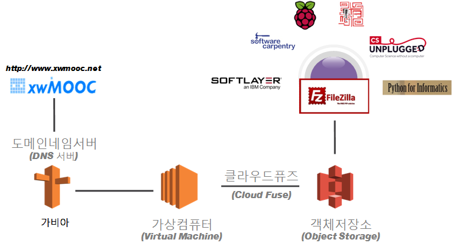
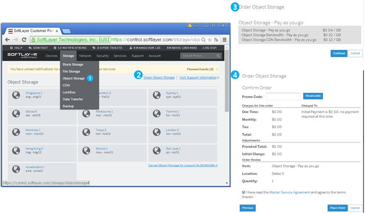
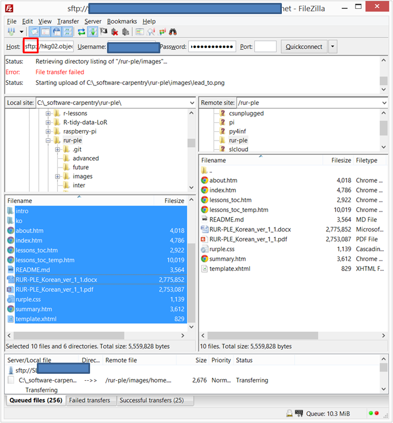
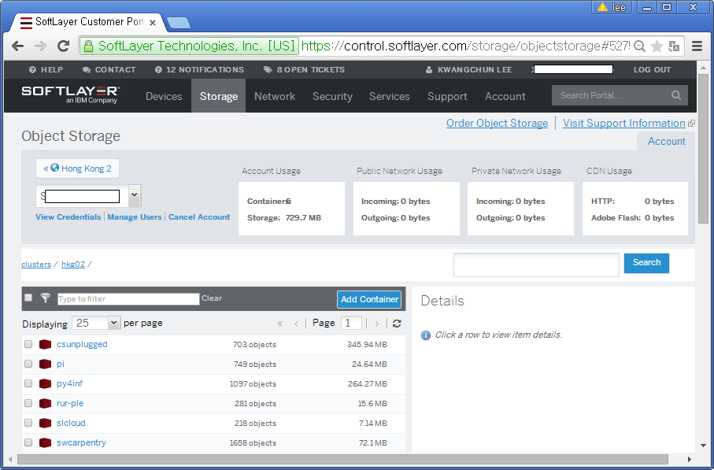

데이터 과학을 위한 저작도구
객체 저장소 FTP 배포(Deployment)
학습 목표
- 객체 저장소를 데이터센터에 생성한다.
- 객체 저장소 FTP를 통해 데이터를 업로드한다.
- 객체 저장소를 가상컴퓨터와 연결한다.
xwMOOC 서비스 배포
더이상 단일 서비스로 컴퓨터 교육을 만족시킬 수가 없기 때문에 xwMOOC에서 다양한 컴퓨터 교육 서비스를 개발했다. 서비스 종류가 많아지고 복잡해짐에 따라 서비스를 종합적으로 관리할 필요성이 증가하여 다음과 같은 FTP(파일전송프로토콜)와 클라우드 퓨즈(Cloud Fuse)를 이용한 클라우드 서비스 모형을 기획하게 되었다. xwMOOC 사용자가 도메인네임서버를 통해서 홍콩데이터센터 가상컴퓨터에 접속하게 되면 객체저장소(Object Storage)에 저장된 컴퓨터 교육 콘텐츠를 서비스를 제공하는 방식으로 되어 있고, 클라우드/소프트웨어 카펜트리/라즈베리파이/컴퓨터과학 언플러그드/러플/파이썬 콘텐츠는 정기적으로 파일질라(Filezilla)를 통해 FTP를 통해 갱신된다.

작업흐름
- 객체 저장소(Object Storage) 생성
- FTP를 통한 컴퓨터 교육 콘텐츠 전송
- 객체 저장소와 가상컴퓨터 클라우드 퓨즈 연결
1. 객체 저장소 생성
고객 포털(Customer Portal) 화면에서 Storage –> Object Storage를 클릭하고 객체저장소(Object Storage)가 위치할 데이터 센터를 지정한다. 예를 들어 Tokyo 2를 선택했다면, 다음에 Order Object Storage를 클릭해서 객체저장소 주문 내역(Confirm Order)을 확정한다.

2. FTP를 통한 컴퓨터 교육 콘텐츠 전송
신규 컨테이너 명칭을 설정한다. Add File 혹은 Add Folder을 클릭하면 로컬 컴퓨터에서 파일이나 폴더를 올릴 수 있다. 하지만 거의 수작업으로 시간이 많이 들고 오히려 번거로울 수 있다. Add Folder를 통해 업로드 대상 폴더만 생성하고 나서 파일질라(Filezilla)를 통해서 FTP 연결을 해서 대량으로 디렉토리 및 폴더를 클라우드 홍콩 데이터센터 객체 저장소에 업로드 한다.
2.1. 파일질라(Filezilla) 통한 FTP 전송

2.2. 홍콩 데이터센터 객체 저장소
총 6개 컴퓨터 교육 콘텐츠 서비스가 1GB가 되지 않는 용량으로 잘 업로드된 것을 확인했다. 객체 저장소는 오픈스택 스위프트 오픈소스에 기반하고 있다.
csunplugged: 언플러그드 컴퓨터 과학 (Computer Science Unplugged)pi: 파이썬 라즈베리 파이 IoT 교육 콘텐츠py4inf: 정보교육을 위한 파이썬 – 데이터 과학자로의 여정rur-ple: 러플(Rur-Ple)scloud: 소프트레이어 클라우드 컴퓨팅 – 백만원 창업 도전swcarpentry: 소프트웨어 카펜트리 – 과학 컴퓨팅을 위한 기본 소프트웨어 기술

3. 객체 저장소와 가상컴퓨터 클라우드 퓨즈 연결
객체 저장소와 가상컴퓨터를 연결하는데 클라우드 퓨즈(CloudFuse)를 사용한다. 클라우드 퓨즈(CloudFuse)는 오픈스택 Swift가 설치된 클라우드 파일에 접근 기능을 제공하는 FUSE 응용프로그램이다.
3.1. 가상 컴퓨터 클라우드 퓨즈 설치
클라우드 퓨즈 설치를 위해서 먼저 GitHub 사이트에서 wget https://github.com/redbo/cloudfuse/tarball/master 명령으로 압축파일을 다운로드 받아 풀어 넣고, 다음 소프트웨어를 설치한다. apt-get install build-essential libcurl4-openssl-dev libxml2-dev libssl-dev libfuse-dev 명령어를 통해서 설치할 수 있다. 중간에 오류가 생길 수가 있으니 사전에 apt-get install pkg-config 명령을 실행한다.
$ apt-get install pkg-config
$ wget https://github.com/redbo/cloudfuse/tarball/master
$ tar -xzvf master
$ cd redbo-cloudfuse-21358f1/
$ apt-get update
$ apt-get install build-essential libcurl4-openssl-dev libxml2-dev libssl-dev libfuse-dev
$ apt-get install fuse
$ ./configure
$ make install3.2. 클라우드 퓨즈 환경설정 및 객체 저장소 연결
Storage –> Object Storage 데이터센터를 클릭하면 주문한 객체저장소가 나오고, View Credentials에서 usrname, api_key, authurl(public) 정보를 .cloudfuse 파일에 다음과 같이 저장한다. 단, cd ~ 명령어로 루트 홈디렉토리에서 .cloudfuse 파일을 생성하는데 예를 들어, sudo nano .cloudfuse로 파일을 생성하고, usrname, api_key, authurl(public) 정보를 다음과 같은 형식으로 작성한다.
username=SLXXXXXX-2:SLXXXXX
api_key=7c7XXXXXXXXXXXXXXXXXXXXXXXXXXX
authurl=https://tok02.objectstorage.softlayer.net/auth/v1.0/cloudfuse /mnt 명령어로 등록을 하게되면 정상적으로 올라간 것을 mount 명령어로 확인한다.
root@dev:~# cloudfuse /mnt
root@dev:~# mountcloudfuse가 정상적으로 /mnt에 올라간 것을 확인할 수 있다.
/dev/xvda2 on / type ext3 (rw,noatime,errors=remount-ro,barrier=0)
proc on /proc type proc (rw,noexec,nosuid,nodev)
sysfs on /sys type sysfs (rw,noexec,nosuid,nodev)
none on /sys/fs/cgroup type tmpfs (rw)
none on /sys/fs/fuse/connections type fusectl (rw)
none on /sys/kernel/debug type debugfs (rw)
none on /sys/kernel/security type securityfs (rw)
udev on /dev type devtmpfs (rw,mode=0755)
devpts on /dev/pts type devpts (rw,noexec,nosuid,gid=5,mode=0620)
tmpfs on /run type tmpfs (rw,noexec,nosuid,size=10%,mode=0755)
none on /run/lock type tmpfs (rw,noexec,nosuid,nodev,size=5242880)
none on /run/shm type tmpfs (rw,nosuid,nodev)
none on /run/user type tmpfs (rw,noexec,nosuid,nodev,size=104857600,mode=0755)
none on /sys/fs/pstore type pstore (rw)
/dev/xvda1 on /boot type ext3 (rw,noatime,barrier=0)
systemd on /sys/fs/cgroup/systemd type cgroup (rw,noexec,nosuid,nodev,none,name=
systemd)
none on /proc/xen type xenfs (rw)
cloudfuse on /mnt type fuse.cloudfuse (rw,nosuid,nodev)root@vm:~# cd /mnt
root@vm:/mnt# lscsunplugged pi py4inf rur-ple slcloud swcarpentry이제 오프서버 저장소가 웹서버 가상컴퓨터에 붙었으니 /mnt/ 폴더 및 파일은 클라우드 홍콩 데이터센터 객체 저장소와 싱크되어 자동으로 정보가 갱신된다.
3.3. 두 디렉토리 사이 동기화(Sync)
클라우드 퓨즈(Cloud Fuse)를 통해서 객체 저장소와 가상 컴퓨터를 동기화했으면 다음으로 가장 많이 사용하는 웹서비스로 바로 연결될 수 있게 rsync를 사용해서 자동 동기화한다. 즉, 사용자 요청이 HTTP, TCP/IP로 웹서비스 요청이 들어오면, 로컬 컴퓨터에서 신규로 생성한 교육 콘텐츠를 FTP 파일전송프로토콜로 전송하게 되면 객체저장소에 저장이되고 클라우드퓨즈를 타고 가상 컴퓨터에 연결되고 rsync를 통해서 웹서버를 통해 즉시 배포되게 된다.
Browser Virtual Machine Object Storage Local Computer
+-------+ +-------------------+ +---------------+ +---------------+
| | HTTP | /mnt (rsync) | Cloud | /rur-ple | FTP | /rur-ple |
| Users |<--------->| *-----------* |<--------->| /python |<--------->| /python |
| | TCP/IP | /var/www/html | Fuse | /swcarpentry | | /swcarpentry |
+-------+ +-------------------+ +---------------+ +---------------+ rsync -rtvuc --delete py4inf_html/ /var/www/html 명령어를 통해서 py4inf_html/와 /var/www/html 디렉토리를 동기화한다. 출발 원천은 py4inf_html/이고, 목표 대상는 /var/www/html된다. -rtvuc --delete는 옵션 플래그다.
-r: 재귀(recursive)적으로 하위 디렉토리도 모두 동기화한다.-t: timestamp, 복사 시간 정보를 보관한다.-v: verbose, 모든 진행과정을 출력한다.-u: 중복을 제거하여 변경된 것만 복사해서 동기화한다.-c: checksum, 검사합이 동일한 것은 건너뛴다.
root@vm:/mnt/py4inf# rsync -rtvuc --delete py4inf_html/ /var/www/htmlBash 쉘스크립트 inotifywait 기능을 통해서 동기화를 매번 FTP로 업로드할 때마다 자동으로 웹서비스로 동기화 배포한다.
#!/bin/bash
while inotifywait -r /mnt/py4inf/py4inf_html/*; do
rsync -av --delete /mnt/py4inf/py4inf_html/ /var/www/html
done